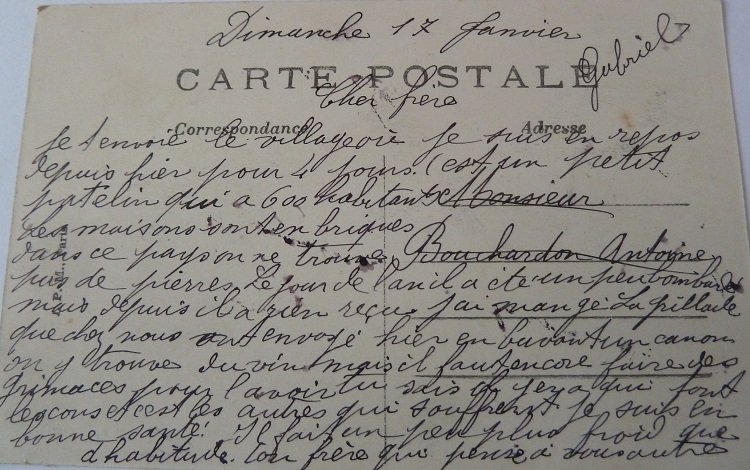

Mort au combat
Janvier 1916, une nouvelle année commence … Gabriel est au front dans le secteur de Ribécourt, à proximité de Cambrai.
C’est une période de guerre ordinaire, une période de calme relatif et en ce début d’année, Gabriel semble s’installer dans cette routine soldatesque. Comme dans cet adagio de Ravel, pour un temps on se laisse emporter par cette harmonie passagère, mais derrière cette mélodie on pressent la menace et les souffrances des jours à venir.
Ainsi les premières cartes postales sont pour les deux petites Augustine et Léa. Une fois encore, Gabriel semble avoir pris grand soin pour choisir les images, des images dans lesquelles les deux sœurs peuvent aisément se refléter.
Au travers du texte, on devine un Gabriel lassé et fatigué par cette guerre mais c’est avec beaucoup de tendresse qu’il leur rappelle les bons moments et les rassure sur l’avenir.
Chère Augustine,
Je t’envoie cette carte ce soir du 1er Janvier pour te dire que j’ai passé une bonne journée, comme nous sommes en repos. J’ai bien dormi la nuit.
Je serais bien été content d’être chez nous pour ces fêtes mais il faut espérer que nous pourrons nous revoir sans tarder. En attendant, je me décourage pas et je serai fier d’avoir fait mon devoir.
Tâche de tenir la marraine bien chaude la nuit. Elle doit souvent se faire du mauvais sang pour nous.
Enfin, je termine en t’embrassant ainsi que tous chez nous.
Gabriel
Chère petite soeur Léa,
J’ai reçu ta lettre qui m’a fait plaisir. Je vois que tu m’oublies pas.
Tu me dis si je suis pas trop malheureux ? Je souffre pas trop pour le moment. Pourvu que j’ai toujours bien la santé, je ferai bien la campagne.
D’ailleurs, ça durera pas toujours, nous nous retrouverons ensemble un jour, tous.
J’ai mangé les pralines et les cigarettes qui étaient très bonnes. J’ai passé une bonne nuit, j’étais mieux que dans la tranchée.
Encore une fois, je t’embrasse sur tes deux petites joues.
Ton Dodole qui t’oublie pas.
Gabriel
Mi-Janvier, Gabriel est de nouveau au repos. Il alterne présence au feu dans les tranchées et périodes de repos, périodes pendant lesquelles il a le temps de correspondre avec la famille. Dans cette carte à Antoine, on devine la frustration du soldat qui bien souvent galère pour améliorer son quotidien dans les villages près du front.
Cher frère,
Je t’envoie le village où je suis en repos depuis hier pour quatre jours.
C’est un petit patelin qui a 600 habitants. Les maisons sont en briques, dans ce pays on ne trouve pas de pierres. Le jour de l’an, il a été un peu bombardé mais depuis il a rien reçu.
J’ai mangé la grillade que chez nous ont envoyée hier en buvant un canon. On y trouve du vin, mais il faut encore faire des grimaces pour l’avoir. Tu sais, il y en a qui font les cons et c’est les autres qui souffrent.
Je suis en bonne santé. Il fait un peu plus froid que d’habitude.
Ton frère qui pense à vous autres.
Gabriel

… Et bientôt, Gabriel retourne dans les tranchées pour, comme il le dit, remuer un peu de terre …
Chère Augustine,
Je t’envoie de mes nouvelles ce soir, en attendant que j’aille remuer un peu plus de terre. Je suis en très bonne santé pour le moment.
Quand tu m’écriras, tu me diras si tu couches toujours avec la marraine.
Tu dois être bien contente d’avoir Antoine avec toi. Maintenant c’est encore pas complet mais le jour viendra où nous serons tous réunis.
Je sais que tu pries beaucoup pour ça, la Sainte Vierge t’écoutera.
Je t’embrasse bien, ainsi que toute la famille.
Gabriel
Au pays les nouvelles sont bonnes … Antoine est définitivement de retour à la ferme et c’est un grand soulagement pour la famille. Cela veut dire plus de bras pour le travail de la ferme même si Antoine souffre encore des séquelles de sa blessure, mais cela veut également dire que l’un des frères est hors de danger. Comme on dit par chez nous, on commence à en voir le bout et cela donne un peu d’espoir à tout le monde.
Je viens de recevoir votre lettre du 9, comme c’est le quinze, elle a donc mis 6 jours.
J’ai reçu celle de chez nous aussi et une de Antoine. Il m’envoie sa photographie. Comme il me dit, il va pas tarder d’être avec vous. Ça sera toujours un de moins au danger.
Il fait très beau aujourd’hui. Comme Marie me dit, c’est la même chose chez nous. Je suis toujours en très bonne santé. Je n’ai pas à me plaindre sur ce point depuis que je suis ici, et je crois que c’est bien l’essentiel.
Auguste m’écrit assez souvent. Comme il me dit, il est pas trop malheureux non plus. Espérons que ça continuera comme ça jusqu’à la fin.
Je vous embrasse bien fort.
Gabriel
Février 1916, de passage à Corbeil, Gabriel avec ses camarades sont en route pour Verdun !
Chers Parents,
Je suis de passage à Corbeil.
Je fais bon voyage, il fait moins froid que chez nous.
Je vous écrirai une lettre demain.
Votre fils qui vous embrasse.
Gabriel
Pour beaucoup, la bataille de Verdun reste dans les mémoires comme un symbole du courage et de la résistance des combattants français. Et pour cause, sur les 95 divisions de l’armée française, 70 divisions y ont participé. La victoire ultime à Verdun, c’est donc la victoire de toute l’armée française.
Arrivant à Verdun dans les premiers jours de Février, Gabriel fait partie des premiers contingents qui rejoignent le champ de de bataille.
Conçue par le général Von Falkenhayn, l’offensive de Verdun consiste avant tout à briser une ligne de front figée et reprendre l’initiative.
Verdun, c’est la guerre industrielle à outrance avec une artillerie qui laboure le champ de bataille avant l’offensive de l’infanterie. La violence des combats se justifie notamment par la très faible étendue du champ de bataille (quelques kilomètres carrés) où des centaines de milliers d’hommes s'affrontent jour et nuit dans des conditions apocalyptiques.
Voici sans doute les dernières cartes envoyées par Gabriel. Ce sont deux cartes à Augustine et à Léa, dans lesquelles il invoque notamment la protection de la Sainte Vierge et son désir de retour au pays.
Chère Augustine,
Je vous envoie chacune une carte avec Léa. J’espère qu’elle vous trouvera en bonne santé.
Maria me dit que vous êtes bien sages toutes deux, c’est ce qu’il faut faire toujours.
Je voudrais bien pouvoir aller te voir, mais tu sais ces sales Bôches ne se dégoûtent pas si vite de la guerre. Enfin, pourvu que nous puissions nous retrouver tous bien portants, quand même que ça serait un peu long, tant pis.
Il faut bien prier la Sainte Vierge pour ça. Qu’elle oublie pas notre France et que l’on soit victorieux.
En attendant ce jour tant désiré, reçois un doux baiser de ton Dodole.
Gabriel
Ma chère Léa,
Je t’envoie cette carte. Je pense qu’elle te trouvera en bonne santé ainsi que tous chez nous.
Maria me dit toujours que vous êtes bien sages avec Augustine. J’en suis bien content.
Le temps me dure bien de pouvoir te causer et te faire rire un peu comme on faisait avant.
J’espère que ça tardera peut-être pas longtemps à présent. J’aurai beaucoup de choses à te raconter.
Ton Dodole qui pense souvent à toi.
Gabriel
L’offensive allemande débute le 21 Février au petit matin sur la rive droite de la Meuse par un bombardement de 800 canons. Le même jour, 60,000 soldats allemands passent à l’attaque sur un front de seulement six kilomètres.
Les soldats français résistent tant bien qu’ils peuvent mais subissent une véritable pluie d’obus. Les statistiques parlent d’elles-mêmes, en deux jours ils reçoivent deux millions d’obus !
Le fort de Douaumont est pris par les allemands, mais bientôt les poilus parviennent à bloquer l’avance ennemie. Avec l’appui de près de 300 pièces d’artillerie et ‘envoi de deux divisions en renfort, le front est stabilisé à nouveau.
Joffre décide alors d’envoyer la 2eme armée à Verdun, sous le commandement du général Pétain.
Il est maintenant clair pour l’Etat Major français que les allemands tentent de percer le front à Verdun. Il faut tenir à tout prix et pour ce faire il convient de renforcer le système de défense.
C’est dans ce contexte que le 4ème régiment du Génie joue un rôle primordial et construit à la hâte de nouvelles tranchées et de nouveaux abris, notamment dans le secteur du Mort Homme sur la rive gauche de la Meuse.
Voici les croquis des systèmes de défense à la construction desquels Gabriel a sans doute participé dans le secteur des Bois Bourrus, au pied de a colline du Mort Homme.
Les canons français placés sur la colline du Mort Homme pilonnent les tranchées allemandes sur l’autre rive de la Meuse. En conséquence, la prise du Mort Homme devient un objectif stratégique pour les allemands.
La bataille du Mort Homme et de ses alentours, dont les Bois Bourrus, commence le 6 Mars et durera jusqu’au 15 Mars.
Une fois encore, le paysage entier est détruit et labouré. C’est dans cet enfer que Gabriel trouve la mort le 10 Mars 1916 , sans doute occupé à réparer des tranchées détruites par les obus.
Du 4ème Régiment du Génie, ils sont sept à périr ce jour là. Les films d’actualité de l’époque sur Verdun se passent de commentaires …
De la mort de Gabriel, on ne sait pas beaucoup au-delà de sa citation militaire. Alors qu’il est fait mention de nombre de ses camarades à la nécropole d’Esnes en Argonne à proximité des Bois Bourrus, nulle mention de Gabriel. Qu’il repose en paix.
Oui, Gabriel, ses camarades soldats et leurs adversaires dans les tranchées, l’ont bien gagné leur coin de paradis …
"Sapeur d'élite, sur le front depuis le début. A donné de sa bravoure et de son énergie maints exemples dans des circonstances où il n'a du qu'à la chance d’échapper à la mort. Mort pour la France, à Germonville, le 10 Mars 1916, aux plus fortes attaques de Verdun. A été cité."
Au fond du tiroir de l’armoire, dans la chambre du haut de la ferme des Raynauds, il y avait une enveloppe avec une carte bien singulière. Ecornée par quelques dents de souris, cette carte a heureusement survécue …
Chers Monsieur et Madame Bouchardon,
Je viens d’être profondément touché en apprenant la cruelle perte que vous éprouvez en la personne de votre fils Gabriel.
Je ne saurais rester indifférent au terrible malheur qui vous frappe.
De cœur je porte le deuil de mon brave camarade et ami sincère qui est tombé si glorieusement au champ d’honneur pour le droit et la liberté.
Je m’associe à vous pour en supporter la douleur et très ému, je vous adresse mes profondes condoléances pour le cher disparu.
Marcel Passat
Caporal 28eme Bataillon – Hôpital auxiliaire No10 Aix-Les-Bains Savoie
Avec cette carte se trouvaient également trois cartes postales de Verdun. Trois cartes sans message et dont la légende suggère qu’elles datent d’après la guerre. Sans doute furent t’elles ramenées de Verdun par l’un ou l’une visitant les lieux où Gabriel périt et cherchant ce qui était ou aurait pu être sa tombe.
Des Sillons aux Tranchées